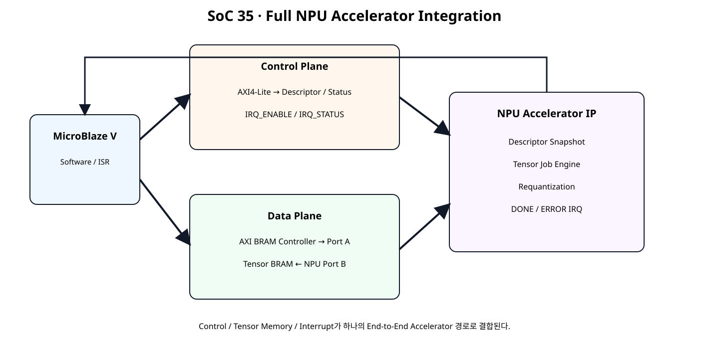
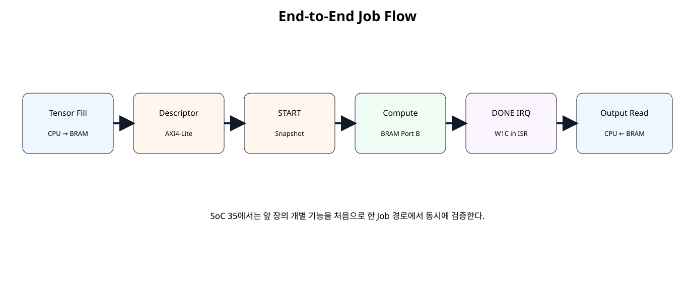

전체 학습 위치
이번 장의 목표

원본 보기 ↗
통합 전 위치
Full NPU Architecture
원본 보기 ↗
Control Plane 유지
Descriptor, START, STATUS, JOB_ID, ERROR_CODE, IRQ Register는 AXI4-Lite 경로에 둔다.
Data Plane 유지
Tensor 데이터는 Register로 되돌리지 않고 AXI BRAM Controller + True Dual-Port BRAM 구조를 유지한다.
Interrupt 통합
통합 Register Map
SoC 34 Map을 유지하고 0x48 IRQ_ENABLE, 0x4C IRQ_STATUS만 추가한다.
Descriptor + IRQ
정상 Job 완료는 DONE Pending을, Descriptor Reject 또는 Engine Error는 ERROR Pending을 만든다. IRQ_STATUS는 W1C다.
Job 실행 순서

원본 보기 ↗
Buffer Ownership
Shadow / Active
START 수락 시 Active Snapshot을 만들고 실행 중 Shadow 변경은 현재 Job에 영향을 주지 않는다.
DONE 경로
ERROR 경로
AXI4-Lite Bridge
AW/W 독립 Capture를 유지하며 두 채널을 확보한 Commit Clock에서 Register Write와 BVALID를 생성한다.
Native BRAM Interface
NPU의 Tensor Job Engine은 AXI Master가 아니라 Native BRAM Port를 사용한다. CPU는 다른 Port를 AXI BRAM Controller를 통해 사용한다.
Full Accelerator Top
module npu_full_accelerator_ip (
(* X_INTERFACE_INFO = "xilinx.com:signal:clock:1.0 s_axi_aclk CLK" *)
(* X_INTERFACE_PARAMETER = "XIL_INTERFACENAME s_axi_aclk, ASSOCIATED_BUSIF S_AXI:BRAM, ASSOCIATED_RESET s_axi_aresetn" *)
input wire s_axi_aclk,
(* X_INTERFACE_INFO = "xilinx.com:signal:reset:1.0 s_axi_aresetn RST" *)
(* X_INTERFACE_PARAMETER = "XIL_INTERFACENAME s_axi_aresetn, POLARITY ACTIVE_LOW" *)
input wire s_axi_aresetn,
// --------------------------------------------------------
// AXI4-Lite Control Plane
// --------------------------------------------------------
(* X_INTERFACE_INFO = "xilinx.com:interface:aximm:1.0 S_AXI AWADDR" *)
input wire [7:0] s_axi_awaddr,
(* X_INTERFACE_INFO = "xilinx.com:interface:aximm:1.0 S_AXI AWVALID" *)
input wire s_axi_awvalid,
(* X_INTERFACE_INFO = "xilinx.com:interface:aximm:1.0 S_AXI AWREADY" *)
output wire s_axi_awready,
(* X_INTERFACE_INFO = "xilinx.com:interface:aximm:1.0 S_AXI WDATA" *)
input wire [31:0] s_axi_wdata,
(* X_INTERFACE_INFO = "xilinx.com:interface:aximm:1.0 S_AXI WSTRB" *)
input wire [3:0] s_axi_wstrb,
(* X_INTERFACE_INFO = "xilinx.com:interface:aximm:1.0 S_AXI WVALID" *)
input wire s_axi_wvalid,
(* X_INTERFACE_INFO = "xilinx.com:interface:aximm:1.0 S_AXI WREADY" *)
output wire s_axi_wready,
(* X_INTERFACE_INFO = "xilinx.com:interface:aximm:1.0 S_AXI BRESP" *)
output wire [1:0] s_axi_bresp,
(* X_INTERFACE_INFO = "xilinx.com:interface:aximm:1.0 S_AXI BVALID" *)
output wire s_axi_bvalid,
(* X_INTERFACE_INFO = "xilinx.com:interface:aximm:1.0 S_AXI BREADY" *)
input wire s_axi_bready,
(* X_INTERFACE_INFO = "xilinx.com:interface:aximm:1.0 S_AXI ARADDR" *)
input wire [7:0] s_axi_araddr,
(* X_INTERFACE_INFO = "xilinx.com:interface:aximm:1.0 S_AXI ARVALID" *)
input wire s_axi_arvalid,
(* X_INTERFACE_INFO = "xilinx.com:interface:aximm:1.0 S_AXI ARREADY" *)
output wire s_axi_arready,
(* X_INTERFACE_INFO = "xilinx.com:interface:aximm:1.0 S_AXI RDATA" *)
output wire [31:0] s_axi_rdata,
(* X_INTERFACE_INFO = "xilinx.com:interface:aximm:1.0 S_AXI RRESP" *)
output wire [1:0] s_axi_rresp,
(* X_INTERFACE_INFO = "xilinx.com:interface:aximm:1.0 S_AXI RVALID" *)
output wire s_axi_rvalid,
(* X_INTERFACE_INFO = "xilinx.com:interface:aximm:1.0 S_AXI RREADY" *)
input wire s_axi_rready,
// --------------------------------------------------------
// Native BRAM Data Plane
// --------------------------------------------------------
(* X_INTERFACE_INFO = "xilinx.com:interface:bram:1.0 BRAM CLK" *)
output wire bram_clk_o,
(* X_INTERFACE_INFO = "xilinx.com:interface:bram:1.0 BRAM RST" *)
output wire bram_rst_o,
(* X_INTERFACE_INFO = "xilinx.com:interface:bram:1.0 BRAM EN" *)
output wire bram_en_o,
(* X_INTERFACE_INFO = "xilinx.com:interface:bram:1.0 BRAM WE" *)
output wire [3:0] bram_we_o,
(* X_INTERFACE_INFO = "xilinx.com:interface:bram:1.0 BRAM ADDR" *)
output wire [11:0] bram_addr_o,
(* X_INTERFACE_INFO = "xilinx.com:interface:bram:1.0 BRAM DIN" *)
output wire [31:0] bram_wdata_o,
(* X_INTERFACE_INFO = "xilinx.com:interface:bram:1.0 BRAM DOUT" *)
input wire [31:0] bram_rdata_i,
// --------------------------------------------------------
// Interrupt
// --------------------------------------------------------
(* X_INTERFACE_INFO = "xilinx.com:signal:interrupt:1.0 irq INTERRUPT" *)
(* X_INTERFACE_PARAMETER = "XIL_INTERFACENAME irq, SENSITIVITY LEVEL_HIGH" *)
output wire irq
);
// Pure Shell / Wrapper:
// AXI bridge + control/descriptor/IRQ + job engine + BRAM clock/reset adapter.
wire reg_wr_en;
wire [7:0] reg_wr_addr;
wire [31:0] reg_wr_data;
wire [3:0] reg_wr_strb;
wire [7:0] reg_rd_addr;
wire [31:0] reg_rd_data;
wire job_start;
wire [11:0] active_input_base;
wire [11:0] active_output_base;
wire [15:0] active_length_words;
wire signed [31:0] active_bias_ch0;
wire signed [31:0] active_bias_ch1;
wire signed [15:0] active_mult_ch0;
wire signed [15:0] active_mult_ch1;
wire [5:0] active_shift_ch0;
wire [5:0] active_shift_ch1;
wire signed [15:0] active_zp_ch0;
wire signed [15:0] active_zp_ch1;
wire engine_busy;
wire engine_done;
wire engine_error;
wire [15:0] read_word_count;
wire [15:0] write_word_count;
wire ctrl_busy;
wire done_sticky;
wire error_sticky;
wire [7:0] error_code;
wire [31:0] job_id;
wire [1:0] irq_enable;
wire [1:0] irq_status;
axi4lite_reg_bridge u_axi_bridge (
.s_axi_aclk(s_axi_aclk),
.s_axi_aresetn(s_axi_aresetn),
.s_axi_awaddr(s_axi_awaddr),
.s_axi_awvalid(s_axi_awvalid),
.s_axi_awready(s_axi_awready),
.s_axi_wdata(s_axi_wdata),
.s_axi_wstrb(s_axi_wstrb),
.s_axi_wvalid(s_axi_wvalid),
.s_axi_wready(s_axi_wready),
.s_axi_bresp(s_axi_bresp),
.s_axi_bvalid(s_axi_bvalid),
.s_axi_bready(s_axi_bready),
.s_axi_araddr(s_axi_araddr),
.s_axi_arvalid(s_axi_arvalid),
.s_axi_arready(s_axi_arready),
.s_axi_rdata(s_axi_rdata),
.s_axi_rresp(s_axi_rresp),
.s_axi_rvalid(s_axi_rvalid),
.s_axi_rready(s_axi_rready),
.reg_wr_en_o(reg_wr_en),
.reg_wr_addr_o(reg_wr_addr),
.reg_wr_data_o(reg_wr_data),
.reg_wr_strb_o(reg_wr_strb),
.reg_rd_addr_o(reg_rd_addr),
.reg_rd_data_i(reg_rd_data)
);
npu_full_control_irq u_control (
.clk(s_axi_aclk),
.resetn(s_axi_aresetn),
.wr_en_i(reg_wr_en),
.wr_addr_i(reg_wr_addr),
.wr_data_i(reg_wr_data),
.wr_strb_i(reg_wr_strb),
.rd_addr_i(reg_rd_addr),
.rd_data_o(reg_rd_data),
.job_start_o(job_start),
.active_input_base_o(active_input_base),
.active_output_base_o(active_output_base),
.active_length_words_o(active_length_words),
.active_bias_ch0_o(active_bias_ch0),
.active_bias_ch1_o(active_bias_ch1),
.active_mult_ch0_o(active_mult_ch0),
.active_mult_ch1_o(active_mult_ch1),
.active_shift_ch0_o(active_shift_ch0),
.active_shift_ch1_o(active_shift_ch1),
.active_zp_ch0_o(active_zp_ch0),
.active_zp_ch1_o(active_zp_ch1),
.engine_busy_i(engine_busy),
.engine_done_i(engine_done),
.engine_error_i(engine_error),
.read_word_count_i(read_word_count),
.write_word_count_i(write_word_count),
.busy_o(ctrl_busy),
.done_sticky_o(done_sticky),
.error_sticky_o(error_sticky),
.error_code_o(error_code),
.job_id_o(job_id),
.irq_o(irq),
.irq_enable_o(irq_enable),
.irq_status_o(irq_status)
);
tensor_job_engine u_engine (
.clk(s_axi_aclk),
.resetn(s_axi_aresetn),
.start_i(job_start),
.input_base_i(active_input_base),
.output_base_i(active_output_base),
.length_words_i(active_length_words),
.bias_ch0_i(active_bias_ch0),
.bias_ch1_i(active_bias_ch1),
.mult_ch0_i(active_mult_ch0),
.mult_ch1_i(active_mult_ch1),
.shift_ch0_i(active_shift_ch0),
.shift_ch1_i(active_shift_ch1),
.zp_ch0_i(active_zp_ch0),
.zp_ch1_i(active_zp_ch1),
.busy_o(engine_busy),
.done_o(engine_done),
.error_o(engine_error),
.bram_en_o(bram_en_o),
.bram_we_o(bram_we_o),
.bram_addr_o(bram_addr_o),
.bram_wdata_o(bram_wdata_o),
.bram_rdata_i(bram_rdata_i),
.read_word_count_o(read_word_count),
.write_word_count_o(write_word_count)
);
bram_clock_reset_adapter u_bram_clock_reset (
.clk_i(s_axi_aclk),
.resetn_i(s_axi_aresetn),
.bram_clk_o(bram_clk_o),
.bram_rst_o(bram_rst_o)
);
endmodule
Top Shell/Wrapper 원칙
Top에는 기능 FSM, 계산, 정책 판단을 넣지 않고 AXI Bridge, Control, Engine, Clock/Reset Adapter 인스턴스 연결만 둔다.
Vivado Block Design
AXI BRAM Controller
CPU가 사용하는 BRAM Interface를 한 Port로 제한하고 BMG의 다른 Port를 NPU Native Port에 남기는 구성을 확인한다.
True Dual-Port BMG
Port A는 CPU, Port B는 NPU가 사용한다. 같은 Tensor Buffer의 동시 수정은 Ownership Rule로 금지한다.
AXI Interrupt Controller
MicroBlaze V에서는 AXI Interrupt Controller를 사용하고 여러 Source는 Concat으로 결합한다.
CPU는 표준 외부 인터럽트 모드로 설정한다. AXI INTC의 irq를 microblaze_riscv_0/Interrupt에 연결하고 입력은 Level-High로 맞춘다. MicroBlaze V의 mtvec 진입과 mepc 저장·MRET 복귀는 생성 BSP가 처리한다. Xil_ExceptionEnable()은 외부 인터럽트 허용과 전역 허용을 설정하며, ISR은 주변장치의 원인을 해제한다.
Address Editor
NPU Control Base와 Tensor BRAM Base를 각각 할당한다. Descriptor의 INPUT_BASE/OUTPUT_BASE는 Tensor BRAM 내부 Offset이다.
SDT 빌드는 INTC_BASEADDR, 비 SDT 빌드는 INTC_DEVICE_ID를 생성 메타데이터에 연결한다. NPU_INTR_ID는 실제 xlconcat·INTC 입력 번호와 일치시킨다.
Software Driver
#ifndef NPU_FULL_H
#define NPU_FULL_H
#include "xil_io.h"
#include "xil_types.h"
#define NPU_CONTROL_OFFSET 0x00U
#define NPU_STATUS_OFFSET 0x04U
#define NPU_VERSION_OFFSET 0x08U
#define NPU_JOB_ID_OFFSET 0x0CU
#define NPU_INPUT_BASE_OFFSET 0x10U
#define NPU_OUTPUT_BASE_OFFSET 0x14U
#define NPU_LENGTH_WORDS_OFFSET 0x18U
#define NPU_ERROR_CODE_OFFSET 0x1CU
#define NPU_BIAS_CH0_OFFSET 0x20U
#define NPU_BIAS_CH1_OFFSET 0x24U
#define NPU_SCALE_CH0_OFFSET 0x28U
#define NPU_SCALE_CH1_OFFSET 0x2CU
#define NPU_ZERO_POINT_OFFSET 0x30U
#define NPU_ACTIVE_INPUT_OFFSET 0x34U
#define NPU_ACTIVE_OUTPUT_OFFSET 0x38U
#define NPU_ACTIVE_LENGTH_OFFSET 0x3CU
#define NPU_READ_COUNT_OFFSET 0x40U
#define NPU_WRITE_COUNT_OFFSET 0x44U
#define NPU_IRQ_ENABLE_OFFSET 0x48U
#define NPU_IRQ_STATUS_OFFSET 0x4CU
#define NPU_CONTROL_START_MASK 0x00000001U
#define NPU_CONTROL_CLR_DONE_MASK 0x00000002U
#define NPU_CONTROL_CLR_ERROR_MASK 0x00000004U
#define NPU_STATUS_BUSY_MASK 0x00000001U
#define NPU_STATUS_DONE_MASK 0x00000002U
#define NPU_STATUS_ERROR_MASK 0x00000004U
#define NPU_STATUS_DESC_VALID_MASK 0x00000008U
#define NPU_IRQ_DONE_MASK 0x00000001U
#define NPU_IRQ_ERROR_MASK 0x00000002U
#define NPU_IRQ_ALL_MASK 0x00000003U
typedef struct {
u32 InputBase;
u32 OutputBase;
u32 LengthWords;
s32 BiasCh0;
s32 BiasCh1;
s16 MultCh0;
s16 MultCh1;
u8 ShiftCh0;
u8 ShiftCh1;
s16 ZpCh0;
s16 ZpCh1;
} NpuDescriptor;
static inline void Npu_WriteReg(
UINTPTR Base,
u32 Offset,
u32 Value
)
{
Xil_Out32(Base + (UINTPTR)Offset, Value);
}
static inline u32 Npu_ReadReg(
UINTPTR Base,
u32 Offset
)
{
return Xil_In32(Base + (UINTPTR)Offset);
}
static inline u32 Npu_PackScale(
s16 Multiplier,
u8 Shift
)
{
return
((u32)Multiplier & 0xFFFFU) |
(((u32)Shift & 0x3FU) << 16U);
}
static inline u32 Npu_PackZeroPoint(
s16 ZpCh0,
s16 ZpCh1
)
{
return
((u32)ZpCh0 & 0xFFFFU) |
(((u32)ZpCh1 & 0xFFFFU) << 16U);
}
static inline void Npu_ProgramDescriptor(
UINTPTR Base,
const NpuDescriptor *Desc
)
{
Npu_WriteReg(Base, NPU_INPUT_BASE_OFFSET, Desc->InputBase);
Npu_WriteReg(Base, NPU_OUTPUT_BASE_OFFSET, Desc->OutputBase);
Npu_WriteReg(Base, NPU_LENGTH_WORDS_OFFSET, Desc->LengthWords);
Npu_WriteReg(Base, NPU_BIAS_CH0_OFFSET, (u32)Desc->BiasCh0);
Npu_WriteReg(Base, NPU_BIAS_CH1_OFFSET, (u32)Desc->BiasCh1);
Npu_WriteReg(
Base,
NPU_SCALE_CH0_OFFSET,
Npu_PackScale(Desc->MultCh0, Desc->ShiftCh0)
);
Npu_WriteReg(
Base,
NPU_SCALE_CH1_OFFSET,
Npu_PackScale(Desc->MultCh1, Desc->ShiftCh1)
);
Npu_WriteReg(
Base,
NPU_ZERO_POINT_OFFSET,
Npu_PackZeroPoint(Desc->ZpCh0, Desc->ZpCh1)
);
}
static inline void Npu_EnableIrq(
UINTPTR Base,
u32 Mask
)
{
Npu_WriteReg(
Base,
NPU_IRQ_ENABLE_OFFSET,
Mask & NPU_IRQ_ALL_MASK
);
}
static inline u32 Npu_GetIrqStatus(UINTPTR Base)
{
return Npu_ReadReg(Base, NPU_IRQ_STATUS_OFFSET);
}
static inline void Npu_ClearIrq(
UINTPTR Base,
u32 Mask
)
{
Npu_WriteReg(
Base,
NPU_IRQ_STATUS_OFFSET,
Mask & NPU_IRQ_ALL_MASK
);
}
static inline void Npu_Start(UINTPTR Base)
{
Npu_WriteReg(
Base,
NPU_CONTROL_OFFSET,
NPU_CONTROL_START_MASK
);
}
#endif
End-to-End Software
#include "xil_exception.h"
#include "xil_printf.h"
#include "xintc.h"
#include "xparameters.h"
#include "npu_full.h"
#ifndef NPU_CTRL_BASEADDR
#error "Define NPU_CTRL_BASEADDR from generated xparameters.h."
#endif
#ifndef TENSOR_BRAM_BASEADDR
#error "Define TENSOR_BRAM_BASEADDR from generated xparameters.h."
#endif
// (변경) 생성 BSP 흐름에 맞춰 INTC 식별자를 선택한다.
#ifndef SDT
#ifndef INTC_DEVICE_ID
#error "Define INTC_DEVICE_ID from generated xparameters.h."
#endif
#else
#ifndef INTC_BASEADDR
#if defined(XPAR_XINTC_0_BASEADDR)
#define INTC_BASEADDR XPAR_XINTC_0_BASEADDR
#elif defined(XPAR_INTC_0_BASEADDR)
#define INTC_BASEADDR XPAR_INTC_0_BASEADDR
#else
#error "Define INTC_BASEADDR from generated xparameters.h."
#endif
#endif
#endif
#ifndef NPU_INTR_ID
#error "Define NPU_INTR_ID from generated xparameters.h."
#endif
static XIntc Intc;
static volatile u32 NpuDoneFlag = 0U;
static volatile u32 NpuErrorFlag = 0U;
static volatile u32 NpuLastIrq = 0U;
static void NpuIsr(void *CallbackRef)
{
const UINTPTR base = (UINTPTR)CallbackRef;
const u32 pending = Npu_GetIrqStatus(base);
NpuLastIrq = pending;
if ((pending & NPU_IRQ_DONE_MASK) != 0U) {
NpuDoneFlag = 1U;
}
if ((pending & NPU_IRQ_ERROR_MASK) != 0U) {
NpuErrorFlag = 1U;
}
Npu_ClearIrq(
base,
pending & NPU_IRQ_ALL_MASK
);
}
static int SetupInterruptSystem(UINTPTR npu_base)
{
int status;
// (변경) SDT는 BaseAddress, 비 SDT는 DeviceId를 사용한다.
#ifndef SDT
status = XIntc_Initialize(&Intc, INTC_DEVICE_ID);
#else
status = XIntc_Initialize(&Intc, INTC_BASEADDR);
#endif
if (status != XST_SUCCESS) {
return XST_FAILURE;
}
status = XIntc_Connect(
&Intc,
NPU_INTR_ID,
(XInterruptHandler)NpuIsr,
(void *)npu_base
);
if (status != XST_SUCCESS) {
return XST_FAILURE;
}
status = XIntc_Start(
&Intc,
XIN_REAL_MODE
);
if (status != XST_SUCCESS) {
return XST_FAILURE;
}
XIntc_Enable(
&Intc,
NPU_INTR_ID
);
Xil_ExceptionInit();
Xil_ExceptionRegisterHandler(
XIL_EXCEPTION_ID_INT,
(Xil_ExceptionHandler)XIntc_InterruptHandler,
&Intc
);
Xil_ExceptionEnable();
return XST_SUCCESS;
}
static void TensorWrite(
UINTPTR TensorBase,
u32 Offset,
u32 Value
)
{
Xil_Out32(
TensorBase + (UINTPTR)Offset,
Value
);
}
static u32 TensorRead(
UINTPTR TensorBase,
u32 Offset
)
{
return Xil_In32(
TensorBase + (UINTPTR)Offset
);
}
int main(void)
{
const UINTPTR npu_base =
(UINTPTR)NPU_CTRL_BASEADDR;
const UINTPTR tensor_base =
(UINTPTR)TENSOR_BRAM_BASEADDR;
const NpuDescriptor job = {
.InputBase = 0x200U,
.OutputBase = 0x300U,
.LengthWords = 8U,
.BiasCh0 = 0,
.BiasCh1 = 4,
.MultCh0 = 1,
.MultCh1 = 3,
.ShiftCh0 = 1U,
.ShiftCh1 = 1U,
.ZpCh0 = 0,
.ZpCh1 = -3
};
u32 timeout;
u32 out0;
u32 out1;
xil_printf("\r\nSoC35 Full NPU Accelerator\r\n");
if (SetupInterruptSystem(npu_base) != XST_SUCCESS) {
xil_printf("ERROR: interrupt setup\r\n");
return 1;
}
TensorWrite(tensor_base, 0x200U, 16U);
TensorWrite(tensor_base, 0x204U, 32U);
TensorWrite(tensor_base, 0x208U, 48U);
TensorWrite(tensor_base, 0x20CU, 64U);
TensorWrite(tensor_base, 0x210U, 32U);
TensorWrite(tensor_base, 0x214U, 64U);
TensorWrite(tensor_base, 0x218U, 96U);
TensorWrite(tensor_base, 0x21CU, 128U);
Npu_ProgramDescriptor(npu_base, &job);
if (
(
Npu_ReadReg(
npu_base,
NPU_STATUS_OFFSET
) &
NPU_STATUS_DESC_VALID_MASK
) == 0U
) {
xil_printf("ERROR: descriptor invalid\r\n");
return 1;
}
Npu_ClearIrq(npu_base, NPU_IRQ_ALL_MASK);
Npu_EnableIrq(npu_base, NPU_IRQ_ALL_MASK);
NpuDoneFlag = 0U;
NpuErrorFlag = 0U;
NpuLastIrq = 0U;
Npu_Start(npu_base);
timeout = 1000000U;
while (
(NpuDoneFlag == 0U) &&
(NpuErrorFlag == 0U) &&
(timeout != 0U)
) {
timeout--;
}
if (timeout == 0U) {
xil_printf("ERROR: NPU timeout\r\n");
return 1;
}
if (NpuErrorFlag != 0U) {
xil_printf(
"ERROR: IRQ=0x%08x CODE=%u\r\n",
(unsigned int)NpuLastIrq,
(unsigned int)Npu_ReadReg(
npu_base,
NPU_ERROR_CODE_OFFSET
)
);
return 1;
}
out0 = TensorRead(tensor_base, 0x300U);
out1 = TensorRead(tensor_base, 0x304U);
xil_printf("OUT_CH0 = 0x%08x\r\n", (unsigned int)out0);
xil_printf("OUT_CH1 = 0x%08x\r\n", (unsigned int)out1);
if (
(out0 != 0x20181008U) ||
(out1 != 0x7F7F6333U)
) {
xil_printf("SOC35 RESULT: FAIL\r\n");
return 1;
}
xil_printf("SOC35 RESULT: PASS\r\n");
return 0;
}ISR
ISR은 IRQ_STATUS를 읽고 Software Flag를 갱신한 뒤 같은 Pending Bit를 W1C하여 Level IRQ를 내린다.
Tensor Write / Read
Software는 Tensor BRAM 시스템 Base + Descriptor Offset으로 Input을 쓰고 DONE 이후 Output을 읽는다.
Self-Checking Regression
`timescale 1ns / 1ps
module tb_npu_full_accelerator;
logic clk = 1'b0;
logic resetn = 1'b0;
logic [7:0] awaddr = 8'h00;
logic awvalid = 1'b0;
wire awready;
logic [31:0] wdata = 32'h0000_0000;
logic [3:0] wstrb = 4'h0;
logic wvalid = 1'b0;
wire wready;
wire [1:0] bresp;
wire bvalid;
logic bready = 1'b1;
logic [7:0] araddr = 8'h00;
logic arvalid = 1'b0;
wire arready;
wire [31:0] rdata;
wire [1:0] rresp;
wire rvalid;
logic rready = 1'b1;
logic cpu_mem_en_i = 1'b0;
logic [3:0] cpu_mem_we_i = 4'h0;
logic [11:0] cpu_mem_addr_i = 12'h000;
logic [31:0] cpu_mem_wdata_i = 32'h0000_0000;
wire [31:0] cpu_mem_rdata_o;
wire irq_o;
integer check_count = 0;
integer error_count = 0;
always #5 clk = ~clk;
npu_full_accelerator_sim_top dut (
.clk(clk),
.resetn(resetn),
.s_axi_awaddr(awaddr),
.s_axi_awvalid(awvalid),
.s_axi_awready(awready),
.s_axi_wdata(wdata),
.s_axi_wstrb(wstrb),
.s_axi_wvalid(wvalid),
.s_axi_wready(wready),
.s_axi_bresp(bresp),
.s_axi_bvalid(bvalid),
.s_axi_bready(bready),
.s_axi_araddr(araddr),
.s_axi_arvalid(arvalid),
.s_axi_arready(arready),
.s_axi_rdata(rdata),
.s_axi_rresp(rresp),
.s_axi_rvalid(rvalid),
.s_axi_rready(rready),
.cpu_mem_en_i(cpu_mem_en_i),
.cpu_mem_we_i(cpu_mem_we_i),
.cpu_mem_addr_i(cpu_mem_addr_i),
.cpu_mem_wdata_i(cpu_mem_wdata_i),
.cpu_mem_rdata_o(cpu_mem_rdata_o),
.irq_o(irq_o)
);
task automatic check_true(
input string name,
input bit condition
);
begin
check_count = check_count + 1;
if (!condition) begin
error_count = error_count + 1;
$error("CHECK FAIL: %s", name);
end else begin
$display("CHECK PASS: %s", name);
end
end
endtask
task automatic check_eq32(
input string name,
input logic [31:0] actual,
input logic [31:0] expected
);
begin
check_count = check_count + 1;
if (actual !== expected) begin
error_count = error_count + 1;
$error(
"CHECK FAIL: %s actual=0x%08h expected=0x%08h",
name,
actual,
expected
);
end else begin
$display(
"CHECK PASS: %s = 0x%08h",
name,
actual
);
end
end
endtask
task automatic axi_write(
input [7:0] address,
input [31:0] data,
input integer order
);
bit aw_done;
bit w_done;
integer timeout;
begin
aw_done = 0;
w_done = 0;
@(negedge clk);
awaddr = address;
wdata = data;
wstrb = 4'hF;
case (order)
0: begin
awvalid = 1'b1;
wvalid = 1'b1;
end
1: begin
awvalid = 1'b1;
wvalid = 1'b0;
end
default: begin
awvalid = 1'b0;
wvalid = 1'b1;
end
endcase
timeout = 0;
while (!(aw_done && w_done)) begin
@(posedge clk);
// (변경) READY가 갱신되기 전 상승 에지의 handshake를 관측한다.
if (awvalid && awready)
aw_done = 1;
if (wvalid && wready)
w_done = 1;
@(negedge clk);
if (aw_done)
awvalid = 1'b0;
if (w_done)
wvalid = 1'b0;
if (
(order == 1) &&
aw_done &&
!w_done
)
wvalid = 1'b1;
if (
(order == 2) &&
w_done &&
!aw_done
)
awvalid = 1'b1;
timeout = timeout + 1;
if (timeout > 40)
$fatal(1, "AXI write timeout");
end
timeout = 0;
while (!bvalid) begin
@(posedge clk);
#1;
timeout = timeout + 1;
if (timeout > 40)
$fatal(1, "AXI BVALID timeout");
end
check_true(
"BRESP OKAY",
bresp == 2'b00
);
@(posedge clk);
#1;
end
endtask
task automatic axi_read(
input [7:0] address,
output [31:0] data
);
integer timeout;
begin
@(negedge clk);
araddr = address;
arvalid = 1'b1;
timeout = 0;
while (!arready) begin
@(posedge clk);
#1;
timeout = timeout + 1;
if (timeout > 40)
$fatal(1, "AXI ARREADY timeout");
end
@(posedge clk);
#1;
timeout = 0;
while (!rvalid) begin
@(posedge clk);
#1;
timeout = timeout + 1;
if (timeout > 40)
$fatal(1, "AXI RVALID timeout");
end
data = rdata;
check_true(
"RRESP OKAY",
rresp == 2'b00
);
@(negedge clk);
arvalid = 1'b0;
@(posedge clk);
#1;
end
endtask
task automatic mem_write32(
input [11:0] address,
input [31:0] data
);
begin
@(negedge clk);
cpu_mem_en_i = 1'b1;
cpu_mem_we_i = 4'hF;
cpu_mem_addr_i = address;
cpu_mem_wdata_i = data;
@(posedge clk);
#1;
@(negedge clk);
cpu_mem_en_i = 1'b0;
cpu_mem_we_i = 4'h0;
cpu_mem_addr_i = 12'h000;
cpu_mem_wdata_i = 32'h0000_0000;
end
endtask
task automatic mem_read32(
input [11:0] address,
output [31:0] data
);
begin
@(negedge clk);
cpu_mem_en_i = 1'b1;
cpu_mem_we_i = 4'h0;
cpu_mem_addr_i = address;
@(posedge clk);
#1;
@(negedge clk);
cpu_mem_en_i = 1'b0;
cpu_mem_addr_i = 12'h000;
data = cpu_mem_rdata_o;
end
endtask
task automatic wait_irq_high;
integer timeout;
begin
timeout = 0;
while (irq_o !== 1'b1) begin
@(posedge clk);
#1;
timeout = timeout + 1;
if (timeout > 300)
$fatal(1, "IRQ did not assert");
end
end
endtask
initial begin
reg [31:0] rd;
repeat (5) @(posedge clk);
resetn = 1'b1;
// --------------------------------------------------------
// 1. CPU fills Tensor BRAM through Port A.
// --------------------------------------------------------
mem_write32(12'h200, 32'd16);
mem_write32(12'h204, 32'd32);
mem_write32(12'h208, 32'd48);
mem_write32(12'h20C, 32'd64);
mem_write32(12'h210, 32'd32);
mem_write32(12'h214, 32'd64);
mem_write32(12'h218, 32'd96);
mem_write32(12'h21C, 32'd128);
// --------------------------------------------------------
// 2. Program descriptor / parameter / IRQ registers.
// Exercise all three AXI write channel orders.
// --------------------------------------------------------
axi_write(8'h10, 32'h0000_0200, 0);
axi_write(8'h14, 32'h0000_0300, 1);
axi_write(8'h18, 32'd8, 2);
axi_write(8'h20, 32'd0, 0);
axi_write(8'h24, 32'd4, 1);
axi_write(8'h28, 32'h0001_0001, 2);
axi_write(8'h2C, 32'h0001_0003, 0);
axi_write(8'h30, 32'hFFFD_0000, 1);
// Clear stale IRQ and status, then enable DONE/ERROR.
axi_write(8'h4C, 32'h0000_0003, 2);
axi_write(8'h00, 32'h0000_0006, 0);
axi_write(8'h48, 32'h0000_0003, 1);
axi_read(8'h04, rd);
check_true(
"descriptor valid",
(rd & 32'h8) != 0
);
// --------------------------------------------------------
// 3. START and wait for DONE IRQ.
// --------------------------------------------------------
axi_write(8'h00, 32'h0000_0001, 0);
// Wait until BUSY appears.
do begin
axi_read(8'h04, rd);
end while ((rd & 32'h1) == 0);
// Shadow changes while the active job is running.
axi_write(8'h10, 32'h0000_0400, 1);
axi_write(8'h14, 32'h0000_0500, 2);
axi_read(8'h34, rd);
check_eq32(
"ACTIVE_INPUT remains 0x200",
rd,
32'h0000_0200
);
axi_read(8'h38, rd);
check_eq32(
"ACTIVE_OUTPUT remains 0x300",
rd,
32'h0000_0300
);
wait_irq_high();
axi_read(8'h4C, rd);
check_true(
"DONE IRQ pending",
(rd & 32'h1) != 0
);
check_true(
"ERROR IRQ clear",
(rd & 32'h2) == 0
);
// CPU reclaims Tensor Buffer after completion.
mem_read32(12'h300, rd);
check_eq32(
"full integration OUT_CH0",
rd,
32'h2018_1008
);
mem_read32(12'h304, rd);
check_eq32(
"full integration OUT_CH1",
rd,
32'h7F7F_6333
);
axi_read(8'h0C, rd);
check_eq32(
"JOB_ID = 1",
rd,
32'd1
);
axi_read(8'h40, rd);
check_eq32(
"READ_WORD_COUNT = 8",
rd,
32'd8
);
axi_read(8'h44, rd);
check_eq32(
"WRITE_WORD_COUNT = 2",
rd,
32'd2
);
// ISR-equivalent W1C.
axi_write(8'h4C, 32'h0000_0001, 0);
repeat (2) @(posedge clk);
#1;
check_true(
"DONE W1C deasserts IRQ",
irq_o === 1'b0
);
// --------------------------------------------------------
// 4. Integrated descriptor ERROR IRQ.
// --------------------------------------------------------
axi_write(8'h00, 32'h0000_0006, 1);
axi_write(8'h4C, 32'h0000_0003, 2);
axi_write(8'h48, 32'h0000_0002, 0);
axi_write(8'h10, 32'h0000_0202, 1);
axi_write(8'h14, 32'h0000_0600, 2);
axi_write(8'h18, 32'd8, 0);
axi_write(8'h00, 32'h0000_0001, 1);
wait_irq_high();
axi_read(8'h4C, rd);
check_true(
"descriptor ERROR IRQ pending",
(rd & 32'h2) != 0
);
axi_read(8'h1C, rd);
check_eq32(
"descriptor ERROR_CODE = 2",
rd,
32'd2
);
axi_read(8'h0C, rd);
check_eq32(
"rejected job keeps JOB_ID = 1",
rd,
32'd1
);
axi_write(8'h4C, 32'h0000_0002, 2);
repeat (2) @(posedge clk);
#1;
check_true(
"ERROR W1C deasserts IRQ",
irq_o === 1'b0
);
$display("");
$display("SOC35 CHECK COUNT : %0d", check_count);
$display("SOC35 ERROR COUNT : %0d", error_count);
if (error_count == 0) begin
$display("SOC35 FULL NPU ACCELERATOR TEST: PASS");
end else begin
$fatal(
1,
"SOC35 FULL NPU ACCELERATOR TEST: FAIL (%0d errors)",
error_count
);
end
#20;
$finish;
end
endmodule
AXI Write Ordering
AW/W 동시, AW 먼저, W 먼저 세 경우를 통합 Testbench에서도 반복 검증한다.
Snapshot Regression
BUSY 중 Shadow를 0x400/0x500으로 바꿔도 Active INPUT/OUTPUT은 0x200/0x300을 유지하는지 검사한다.
DONE IRQ Regression
ERROR IRQ Regression
Python Reference
Control Plane: AXI4-Lite descriptor + IRQ
Data Plane: Tensor BRAM native Port B
active INPUT_BASE = 0x200
active OUTPUT_BASE = 0x300
shadow change during BUSY does not affect active snapshot: PASS
OUT_CH0 = 0x20181008
OUT_CH1 = 0x7F7F6333
DONE pending + enable -> level IRQ: PASS
W1C DONE -> IRQ deassert: PASS
descriptor reject -> ERROR IRQ path: required by RTL/TB
SOC35 PYTHON FULL-INTEGRATION REFERENCE: PASS
Spreadsheet runtime warmup failed during python startup
Traceback (most recent call last):
File "/tmp/tmp.L2TH2Y5coc/artifact_tool_v2-2.8.22/artifact_tool/patches/warm_spreadsheet_runtime_on_startup.py", line 26, in warm_spreadsheet_runtime_on_startup
File "/tmp/tmp.L2TH2Y5coc/artifact_tool_v2-2.8.22/artifact_tool/spreadsheet_warmup.py", line 772, in warm_spreadsheet_runtime
File "/tmp/tmp.L2TH2Y5coc/artifact_tool_v2-2.8.22/artifact_tool/rpc/connection.py", line 37, in get_or_create_client
File "/tmp/tmp.L2TH2Y5coc/artifact_tool_v2-2.8.22/artifact_tool/rpc/daemon.py", line 124, in start_daemon
TimeoutError: Timed out waiting for artifact tool daemon socket. Set ARTIFACT_TOOL_RPC_DAEMON_STARTUP_TIMEOUT_S=<seconds> to increase the limit.
OOC Synthesis
Full Accelerator IP만 OOC 합성하여 Control/Engine/DSP Timing을 확인하고 실제 Tensor BRAM은 Block Design에서 BMG로 구현한다.
Timing / Resource
실제 DSP48, LUT/FF, WNS/TNS는 Vivado Report로 확인한다. SoC 35에서는 단일 100 MHz Clock Domain을 유지한다.
SoC36 연결
오류 점검
| 증상 | 원인 | 확인 |
|---|---|---|
| Control은 되지만 Tensor 값 오류 | BRAM Port 연결/Address 의미 오류 | Port A/B, Byte Address |
| IRQ 계속 High | IRQ_STATUS 미Clear | ISR W1C |
| 현재 Job 주소 변경 | Shadow 직접 연결 | Active Snapshot |
| CPU/NPU 데이터 충돌 | Ownership 위반 | BUSY 동안 CPU 접근 금지 |
| Vivado BMG Port 없음 | AXI BRAM Controller가 두 Port 사용 | BRAM Interface 수 확인 |
SoC 35 완료 체크리스트
- [ ] S_AXI / BRAM / irq 세 인터페이스를 설명한다.
- [ ] Control Plane과 Data Plane을 통합 후에도 분리한다.
- [ ] Descriptor START가 Active Snapshot을 만든다.
- [ ] Tensor BRAM Port A/B 역할을 구분한다.
- [ ] DONE/ERROR가 Level IRQ로 연결된다.
- [ ] ISR에서 W1C한다.
- [ ] AXI Write 순서 3가지를 회귀 검증한다.
- [ ] 정상 결과와 Descriptor Error IRQ를 모두 확인한다.
- [ ] Top을 Shell/Wrapper로 유지한다.
- [ ] SoC36 Software End-to-End 준비를 완료한다.
공식 문서 및 근거
| AMD UG994 · Handling Interrupts · 2026.1 | MicroBlaze V AXI INTC / Concat / Level Interrupt |
| AMD UG1711 · Run Connection Automation · 2026.1 | AXI BRAM Controller / BMG 연결 |
| AMD UG994 · Port Widths · 2026.1 | BRAM Address Width 경고 확인 |
| AMD AXI INTC · xintc.h | 비 SDT DeviceId / SDT BaseAddr 초기화 함수 원형 |